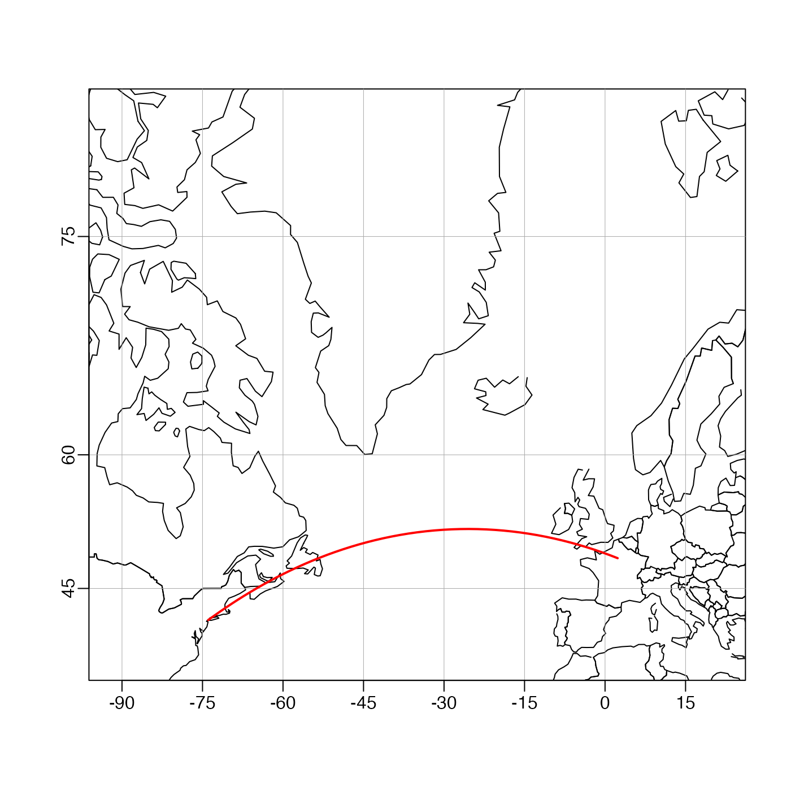

Each pair in the longitude and latitude vectors is considered
in turn. For long vectors, this may be slow.
References
http://williams.best.vwh.net/avform.htm#Intermediate(link worked for years but failed 2017-01-16).
See also
Other functions relating to geodesy:
geodDist(),
geodXy(),
geodXyInverse()
Author
Dan Kelley, based on code from Clark Richards, in turn based on formulae provided by Ed Williams (see reference 1)].
Examples
# \donttest{
library(oce)
data(coastlineWorld)
mapPlot(coastlineWorld,
type = "l",
longitudelim = c(-80, 10), latitudelim = c(35, 80),
projection = "+proj=merc"
)
# Great circle from New York to Paris (Lindberg's flight)
l <- geodGc(c(-73.94, 2.35), c(40.67, 48.86), 1)
mapLines(l$longitude, l$latitude, col = "red", lwd = 2)

# }